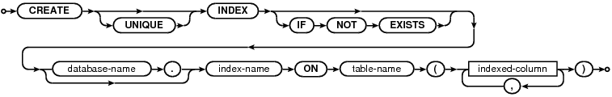
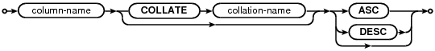

Choose any three.
|
|
SQL As Understood By SQLite
CREATE INDEX
create-index-stmt:

indexed-column:

The CREATE INDEX command consists of the keywords "CREATE INDEX" followed by the name of the new index, the keyword "ON", the name of a previously created table that is to be indexed, and a parenthesized list of names of columns in the table that are used for the index key.
Each column name can be followed by one of the "ASC" or "DESC" keywords to indicate sort order. The sort order may or may not be ignored depending on the database file format. The "legacy" file format ignores index sort order. The descending index file format takes index sort order into account. Only copies of SQLite newer than version 3.3.0 (released on 2006-01-10) are able to understand the newer descending index file format and so for compatibility with older versions of SQLite, the legacy file format is generated by default. Use the legacy_file_format pragma to modify this behavior and generate databases that use the newer file format. Future versions of SQLite may begin to generate the newer file format by default.
The COLLATE clause optionally following each column name defines a collating sequence used for text entries in that column. The default collating sequence is the collating sequence defined for that column in the CREATE TABLE statement. Or if no collating sequence is otherwise defined, the built-in BINARY collating sequence is used.
There are no arbitrary limits on the number of indices that can be attached to a single table. The number of columns in an index is limited to the value set by sqlite3_limit(SQLITE_LIMIT_COLUMN,...).
If the UNIQUE keyword appears between CREATE and INDEX then duplicate index entries are not allowed. Any attempt to insert a duplicate entry will result in an error. For the purposes of unique indices, all NULL values are considered to different from all other NULL values and are thus unique. This is one of the two possible interpretations of the SQL-92 standard (the language in the standard is ambiguious) and is the interpretation followed by PostgreSQL, MySQL, Firebird, and Oracle. Informix and Microsoft SQL Server follow the other interpretation of the standard.
If the optional IF NOT EXISTS clause is present and another index with the same name aleady exists, then this command becomes a no-op.
Indexes are removed with the DROP INDEX command.